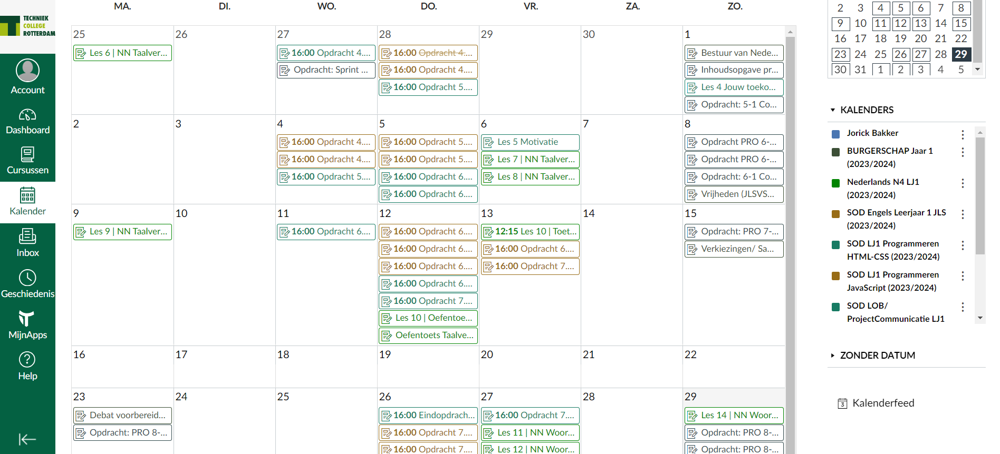
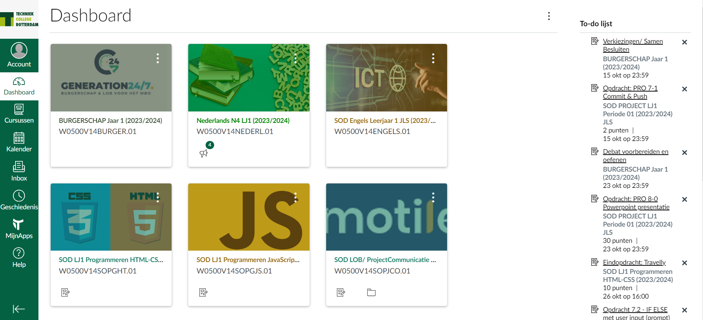
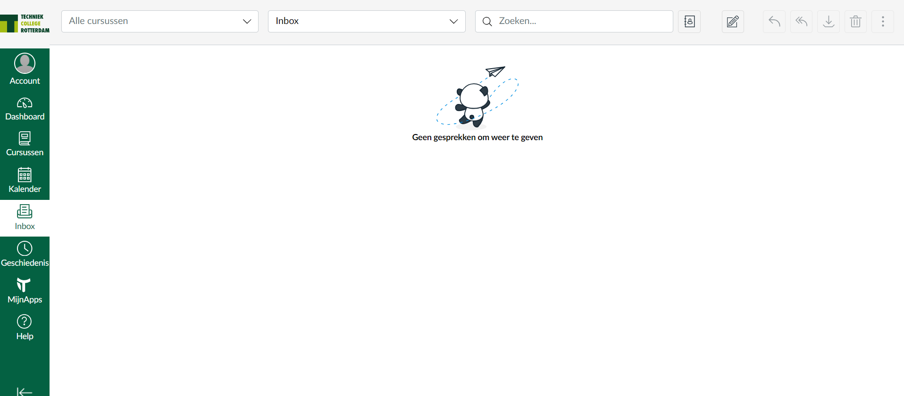

Wat is canvas?
Hier komt alle tekst over canvas
Kort gezegd, Canvas is eigenlijk ons systeem om effectief alles te kunnen overzien met wat wij moeten doen voor school. Maar jullie willen natuurlijk geen korte uitleg, dus zie hieronder wat meer info!
In Canvas kun je heel veel verschillende dingen zien, denk hier aan:
Kalender: Welke opdrachten moet ik afhebben en wanneer? Dat zie je hier!→

← Dasboard: Welke vakken hebben we eigenlijk allemaal? Dit is hier te vinden!

Problemen of vragen aan de docent buiten schooltijden? Stuur hier een berichtje voor een prive gesprek met desbetreffende docent!→
Canvas word eigenlijk het meest gebruikt door de studenten, dit gezien al hun werk hier gevonden kan worden, en direct ingeleverd kan worden. Hier krijg je mededelingen, en natuurlijk je cijfers! Daarnaast kun je hier vrijwel alles vinden wat je nodig hebt.